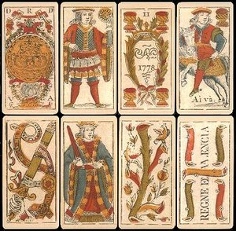

Truco é um jogo de cartas praticado em diversos locais da América do Sul e algumas regiões da Espanha e Itália. É um jogo de vazas jogado com o baralho espanhol, por dois, quatro ou seis jogadores, divididos em dois lados opostos. Na Região Sudeste do Brasil é jogado com o baralho francês, enquanto na Região Sul usa-se o baralho espanhol.
Na versão jogada em Valência, na Espanha, utiliza-se um baralho espanhol de 22 cartas, já que todos os noves, oitos, figuras (reis, cavalos e damas), dois, ases de copas e de ouros e curingas são removidos.